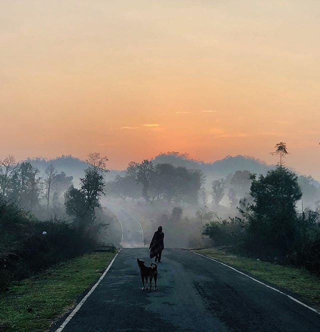
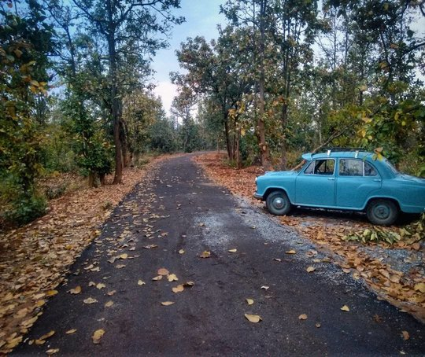

McCluskiegunj, A "Mini-London "
located 40 miles away from Ranchi
Away from the hustle-bustle of the capital city of Ranchi,
lies a small hilly town surrounded by forests that speaks volume about colonial India.
We have often heard about British officers and their love for hilly areas and to be honest,
most of the places are now famous tourist spots in India.
However, faith was not the same for this small town that was built strictly for the Anglo-Indian community.
Yes, a town specifically built for the descendants of Europeans who married Indian men or women

McClusiegunj- A "Mooluk" of Anglo Indians
During the time when revolutionary movements were at peaks in India,
to end the years-long British rule, the Anglo-Indian community felt crushed between
the cultural difference as they were neither British nor Indians.
McCluskie leased 10,000 acres of land in the forest-covered area of Chota Nagpur Plateau
near the Lapra railway station from the king of Ratu and formed a cooperative society
called ‘Colonisation Society of India’ in the year 1933.
The region was chosen mainly because of the hilly location, fertile land, railway station,
and availability of enough water due to the flowing river.
He invited the Anglo-Indians to buy shares in this cooperative society and get a plot of land in return.
The membership was given to people who were of European descent and not necessarily British.
McCluskie sent circulars to almost 2 lakhs Anglo-Indians residing in India and nearly 400 families moved in.
At last, his dream became true and a small town was founded which the Anglo-Indian community
proudly called their “Mooluk”, a homeland.He invited the Anglo-Indians to buy shares in this cooperative society
and get a plot of land in return. The membership was given to people who were of European descent and not
necessarily British.
After the death of Earnest McCluskie, in the year 1935,
the Lapra town was renamed to McCluskieganj in the memories of its founder.



.JPG)